Inhalt Index DeskTop Bronstein

 Differentialrechnung Differentiation von Funktionen von mehreren Veränderlichen Substitution von Variablen in Differentialausdrücken und Koordinatentransformationen
Differentialrechnung Differentiation von Funktionen von mehreren Veränderlichen Substitution von Variablen in Differentialausdrücken und Koordinatentransformationen


Gegeben sei eine Funktion sowie ein funktionaler Zusammenhang, der die unabhängige Variable, die Funktion und deren Ableitungen enthält:
| 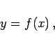 | (6.59a) |
Die Ableitungen können dann bei der Substitution der Variablen auf die folgende Weise berechnet werden:
| 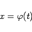 | (6.60a) |
verknüpft ist. Dann gilt
| 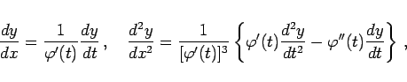 | (6.60b) |
| 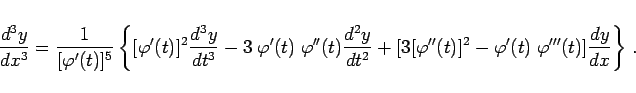 | (6.60c) |
gegeben ist, werden die Ableitungen 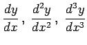 mit denselben Formeln berechnet, aber die Ableitungen 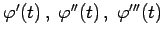 sind nach den Regeln für implizite Funktionen zu berechnen. In diesem Falle kann es vorkommen, daß der Zusammenhang (6.59b) die Variable x enthält. Zur Eliminierung wird dann die Verknüpfung (6.61) benutzt.
| 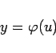 | (6.62a) |
verknüpft ist. Die Berechnung der Ableitungen kann dann mit den folgenden Formeln erfolgen:
| 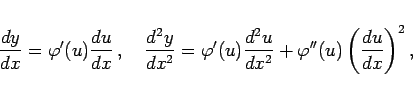 | (6.62b) |
| 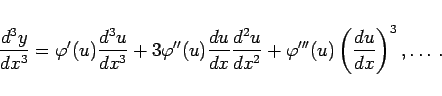 | (6.62c) |
| 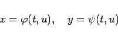 | (6.63a) |
verknüpft sind. Zur Berechnung der Ableitungen können die folgenden Formeln verwendet werden:
| 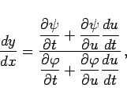 | (6.63b) |
| 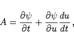 | (6.63e) |
| 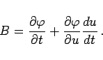 | (6.63f) |
Die Berechnung der dritten Ableitung  geschieht in analoger Weise.
geschieht in analoger Weise.
| Beispiel | ||||||
|
Für die Transformation kartesischer Koordinaten in Polarkoordinaten gemäß
berechnen sich die erste und zweite Ableitung wie folgt:
|